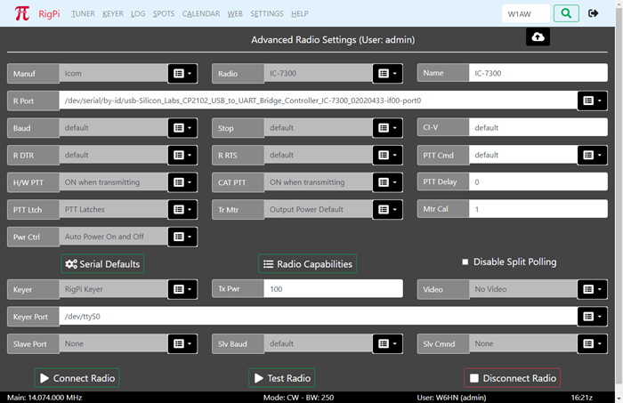

|
<< Click to Display Table of Contents >> Navigation: Settings > |
Two Radio Settings options are provided in the RigPi SETTINGS Menu. Basic Radio settings take advantage of Hamlib default settings for each radio. If you have made changes to the radio default Baud rate, stop bits, or RTS/DTR settings in your setup, use Advanced Radio settings. Advanced Radio settings also provide additional troubleshooting aids.

Most settings options use a drop-down list of options. Click the down arrow on the right end of an option that uses a list from which to choose. Click the option you wish to set and that option appears in the settings box. Boxes that are filled from drop down lists are gray since they cannot be filled manually.
To save changes, click the cloud up arrow at the top of the window. Use Disconnect Radio followed by Connect Radio to apply changes. Connect Radio also saves changes before applying them.
Function |
Label |
Notes |
Radio Manufacturer |
Manual |
Select the company that manufactured your radio. A special "Hamlib" manufacturer can be used for special purposes, see the Technical>Sharing Radios, Rotors and Keyer topic. |
Radio Model |
Radio |
Once you have selected a Manufacturer, the Model list shows all supported models from that manufacturer. |
Radio Name |
Name |
Enter the name you want to use for this radio. This radio name appears in the Tuner window, in many alert dialogs, and in your log. The Model name is added to the Name box automatically, but you can change it. For example, the model KX3 appears in the Elecraft list. You can change the Radio Name to something like 'KX3@home' or 'KX3@remote', depending on your use. If the name is too long it will overflow the allowed space in the Tuner panel, so you may have to abbreviate it. If the account is for remote access, use 'Hamlib/Net rigctl for the radio. Change the Name to the exact name for the station RigPi radio. Doing so lets the remote RigPi know what physical radio is being used so it can looks up info such as available bandpasses. |
Radio Port |
R Port |
The Port drop-down list shows all active ports connected to serial devices through a USB port. If you have a single USB device connected to RigPi, there will be one long and one short entry in the list. With more than one radio or serial device, pull the radio USB connector out, refresh the page, and see what port is missing. Rebooting RSS can cause the port numbers to change. Short tty USB ports are listed along with long port names provided by the USB device driver (by-id). The 'by-id' names do not change when you reboot, so choose a by-id device if possible. In addition to a USB port, RigPi can connect to another RigPi. located on the same LAN or at a distant location over the Internet. See this reference. |
Radio Port Baud Rate |
Baud |
The Baud rate for the selected radio. Hamlib defaults to the highest Baud rate permitted by the radio. You can change the radio Baud rate in the radio menu. Leave the RSS Baud rate set to default if you are using the fastest Baud rate possible in your radio. (Not used for Hamlib/Net rigctl Remote connection.) |
Radio Port Stop Bits |
Stop |
The stop bits for the selected radio. Leave this set to default if you have not changed the stop bits from the factory settings. |
Icom CI-V number |
CI-V |
Icom radios are identified by a number unique to each radio. To use the Hamlib CI-V default number, enter default. You can use a hex number in the format 0xnn where nan is the hex identifier, or in decimal format nan. Decimal radio 23 would simply show the number 23. This identifier number only changes if you modify it from the radio's menu. |
Radio Port DTR |
R DTR |
Determines the DTR state of the radio port. The options are: default, high, and low. To use the Hamlib default for the radio, select default. |
Radio Port RTS |
R RTS |
Determines the RTS state of the radio port. The options are: default, high, and low. To use the Hamlib default for the radio, select default. (Not used for Remote connection.) |
CAT PTT Command |
PTT Cmdr |
Select the CAT command to be sent to the radio for PTT On. The options are: default, w TX1;, and Custom. Some radios require TX1; to be sent to tell the radio to use the rear panel Data connector for audio input. If your radio requires a special command, use the Custom option to enter a Hamlib or custom radio command. Custom radio commands use the native CAT PTT command. Precede the command with a w<space>. |
Hardware PTT |
H/W PTT |
Determines how the hardware PTT circuits respond. The options are: None, ON when transmitting (default),Hamlib GPIO, and ON when radio connected. This option controls both Audio PTT and Keyer PTT outputs. See the Keyer Settings topic for more control over Keyer PTT operation. The Hamlib GPIO option is designed for external programs, such as WSJT-X, that do not support GPIO pin control for PTT, and radios that do not support CAT PTT. With this option the RigPi hardware PTT switch can be used to control PTT through an ACCT connector on the radio. RigPi CAT PTT is not available when Hamlib GPIO is selected so the CAT PTT selection is ignored. |
CAT PTT |
CAT PTT |
Determines how the CAT PTT responds. The options are: None, ON when transmitting (default), and ON when radio connected. The CAT PTT selection is ignored when you use the Hardware PTT GPIO option. |
PTT Delay |
Enter the number of milliseconds delay from when the PTT button is toggled on the Tuner window to when transmit is started. The USB AF Gain is reduced when the PTT button is pressed to stop audio, This delay prevents the transmission of receive audio fed back from the remote device but also delays a voice transmission. The noise burst usually requires a delay of 100-200 ms.
Not all audio interfaces allow audio to be muted, check using Alsamixer which shows the available settings. The RigPi Audio Board is supported. In RigPi->Settings->Advanced Radio, set PTT Delay to 3000 (3 seconds). |
|
PTT Latch |
PTT Latches |
PTT mode selections include 'PTT Latches' (tap PTT button to turn transmit on continuously) and PTT Momentary (press PTT button to transmit). |
Transmit Meter |
Tr Mtr |
Select the parameter you want displayed by the Tuner S-Meter when in transmit. The options include Output Power, Output Power Default, SWR, ALC, Voltage, Current, Mic Gain, and Meter. The readings supported by Hamlib with your radio can be found in the capabilities list shown when you click Radio Capabilities. Look in the Get Level list. None, one, or all options may be supported. Output Power Default shows the static setting for maximum power output set in your radio. See Mtr Cal, below, for calibrating the meter. |
Meter Calibration |
Mtr Cal |
The value reported by the radio for the reading you have chosen can be calibrated with this option. If your transmitter has a maximum power output of 100 watts, you have selected Output Power Default, setting the Mtr Cal to 100 gives a full scale indication of 100. If you have set the maximum power output to 50 watts, setting Mtr Cal to 500 gives a reading of 10 on the meter. See below. Each Tr Mtr selection has its own calibration level. |
Power Control |
Pwr Ctrl |
RigPi can turn the radio on when it first connects and off when it disconnects. The Power Control drop-down provides options for Power On and Power Off. Use Manual if you don't want RigPi to control power. The Manual option should be used when connecting to a RigPi using Hamlib Net rigctl or another copy of the same radio if you don't want that second connection to control power.. |
Serial Defaults button |
Serial Defaults |
Click to show the defaults used in Hamlib for connecting to the specified radio. |
Radio Capabilities button |
Radio Capabilities |
Provides a list of all set and read capabilities for the selected radio. |
Disable Split Polling check box |
Disable Split Polling |
Some radios, such as many made by Icom, do not provide a way to directly read the split VFO frequency. Instead, the frequency is read by swapping VFO's. This causes flickering on the split frequency readout. While the flickering doesn't cause changes in frequency, it can be disconcerting. Put a check in the Disable Split Polling option to prevent the reading of the split frequency VFO to stop the flickering. Keep in mind that any manual changes to the split frequency made on the radio will not known by RigPi. Split reading for some radios is not supported by Hamlib even though the radio provides a means of doing so. Use Radio Capabilities to determine if your radio fits into this category. |
Keyer |
Select RigPi Keyer, via CAT, WinKeyer, CTS External, or None from the drop-down list. RigPi Keyer is available for one account. (The K1EL RigPi Keyer provides two-radio support, SO2R). Other accounts can choose one of the other options. The WinKeyer option is used for a standalone K1EL WinKeyer connected through a USB port. See the Keyer Settings topic for more information about RigPi Keyer and WinKeyer. |
|
Transmitter Power |
Tx Pwr |
The default power level used by your transmitter. This value is used in logging. |
Video Position Selection |
Video |
One camera is supported by RigPi, but each account has access to the video from that camera. The options include None (no video), Video -> S-meter (video replaces S-meter panel), Video -> Frequency Panel (video replaces Frequency panel). See the Motion topic in Other Programs to learn more about using video with RigPi. |
CW Keyer Port |
Keyer Port |
RigPi Keyer uses /dev/ttyS0 for control. Enter the IP of another RigPi to connect to the second Keyer board. Via CAT does not require a separate port, it uses the radio port. The CW Port parameters are not adjustable. The WinKeyer3 IC and WinKeyer devices use 1200 Baud with one stop bit. If using element keying from RigPi Hub, set the port to 30039 + n where n is the account number. For example, set the Keyer port to 30040 for account 1. |
Slave Port |
Slave Port |
Port used for slave connection. See text below for more information on the slave command. Note the port used disappears from the port list once you have connected, it still exists for the driver. To restore the list, pull out the FTDI cable and reinsert. Refresh the Advanced Settings window. |
Slave Baud |
Slv Baud |
Baud rate used for slave connections. |
Slave Command |
Slv Cmnd |
Command format sent by RigPi when there is a frequency change. The Kenwood IF command sends 38 characters including current frequency. The Kenwood FA command sends 14 characters containing only frequency. Band BCD is used for devices that are controlled by BCD Band data, such as the Ameritron RCS-12 Automatic Antenna Switch. A special cable is required, see below. Macro Decimal is used for controlling the on/off state of up to 8 devices. A special cable is required, see below. |
Connect Radio button |
Connect Radio |
Connect the specified radio and keyer to RigPi. The Connect Radio button also saves any changes you have made in settings. |
Test Radio button |
Test Radio |
Attempts to connect to the radio using the settings values and creates a report that is displayed. The report can give helpful information when the radio isn't connecting. To share the report, select all the text, copy, then paste it to a destination, such as an email. An comprehensive log can be found in /var/log with the name rigpi-radio.log. |
Disconnect Radio button |
Disconnect Radio |
Disconnects the radio |
Tr Mtr Example
Here is a list of the readings are supported by Hamlib for the TS-570S. This list is extracted from the Radio Capabilities button in Radio>Advanced.
PREAMP(0..0/0) ATT(0..0/0) AF(0..0/0) RF(0..0/0) SQL(0..0/0) RFPOWER(0..0/0) MICGAIN(0..0/0) KEYSPD(0..0/0) AGC(0..0/0) SLOPE_LOW(0..0/0) SLOPE_HIGH(0..0/0) STRENGTH(0..0/0)
The only two readings that appear to apply to the TS-570S in transmit are RFPOWER and MICGAIN. The best option is the “Output Power Default” selection in Radio>Advanced>Tr Mtr which is RFPOWER in the list above. That is a static reading, it reads the max level the radio is set to, not what is being transmitted. The Mtr Cal sets the max level calibration of the meter. So if you enter 200 for Mtr Cal and you have your transmitter set to 100 watts max, the bottom digit scale on the meter should be 50 when in transmit.
Slave Command
RigPi supports a single slave connection per account.
The RigPi Slave Command sends one of two CAT commands when there is a frequency change in the connected radio, BCD Band data when the radio band is changed, or manually triggered decimal commands. The commands can be used with devices, such as the SteppIR antenna controllers, a compatible power amplifier, or a Kenwood radio. For example, you may have an Icom IC-7300 as your radio, but you also have a Kenwood TS-2000. The Kenwood frequency tracks any changes in the Icom's frequency as you tune.
The Band BCD option sends Band BCD data through a special cable to tell external devices what band the radio is currently using. The special cable is an FTDI C232HM (C232HM-EDHSL-0). This cable has 10 wires that can be used for interfacing to other devices. The FTDI cable can be purchased from Mouser Electronics. The 5th line in Band BCD mode goes low when the radio is transmitting.
The Macro Decimal option is used for Macros or a row of LED indicator lights below the tuning knob. Up to 8 external devices can be controlled using a Macro command !SWn-m, where n is 1-8 and m is 0 (off) or 1 (on). Macro Decimal switch macros can be stacked, so !SW1-1!SW3-1 turns devices 1 and 3 on.
Band BCD C232HM-EDHSL-0 wiring |
||||
Wire |
Signal |
Ameritron RCS-12 |
Elecraft KPA-500 |
Elecraft KPA-1500 |
Red |
VCC |
|
|
|
Orange |
BIT/PIN 0 |
BCDA (pin 2) |
Band 0 (pin 13) |
Band 0 (pin 13) |
Yellow |
BIT/PIN 1 |
BCDB (pin 1) |
Band 1 (pin 3) |
Band 1 (pin 3) |
Green |
BIT/PIN 2 |
BCDC (pin 9) |
Band 2 (pin 9) |
Band 2 (pin 9) |
Brown |
BIT/PIN 3 |
BCDD (pin 8) |
Band 3 (pin 14) |
Band 3 (pin 14) |
Grey |
BIT/PIN 4 |
PTT (pin 7) |
PTT (pin 10) |
PTT (pin 10) |
Purple |
BIT/PIN 5 |
|
|
|
White |
BIT/PIN 6 |
|
|
|
Blue |
BIT/PIN 7 |
|
|
|
Black |
GND |
Ground (pin 6) |
Ground (pin 5) |
Ground (pin 5) |
Radio/Rotor/CW Ports
Use this table to determine the port numbers to use if connecting from a second RigPi to the radio RigPi. The ports in accounts 1 and 2 have been opened in the RigPi Firewall. If using account 3 or higher, you must modify the firewall.
Here is how to modify the Firewall to enable account 3:
1. Open Terminal on the Raspberry Pi Desktop for the radio RigPi.
2. Enter 'sudo su'.
3. Enter 'ufw allow 4536/tcp'
4. Enter 'ufw allow 4537/tcp'
5. Enter 'ufw allow 30003/tcp'
6. Enter 'ufw allow 4536/tcp'
7. Enter 'ufw allow 40042/udp'
Account |
Radio |
Rotor |
CW (CCM Port) |
Manual CW |
Notes |
1 |
4532 tcp |
4533 tcp |
30001 tcp |
40040 udp |
|
2 |
4534 tcp |
4535 tcp |
30002 tcp |
40041 udp |
|
3 |
4536 tcp |
4537 tcp |
30003 tcp |
40042 udp |
Ports must be opened in Firewall |
4 |
4538 tcp |
4539 tcp |
30004 tcp |
40043 udp |
Ports must be opened in Firewall |
Open any ports you want to access in your home router. For example, open 4536 if you are using account 3 on the station RigPi and only want radio control.